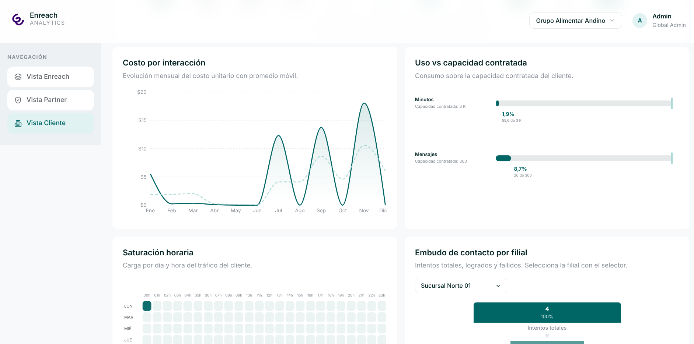

Finalizado
ENREACH DATA WAREHOUSE/BI
Implementación de un Data Warehouse para el sistema Enreach. Integra ETL con Pentaho Spoon, modelo dimensional en PostgreSQL, funciones SQL analíticas, API REST en Spring Boot y dashboards web en React.
Mi aporte: desarrollo de la Vista Partner, reportes analíticos, consultas SQL y conexión de datos para el dashboard.
Ver repositorio